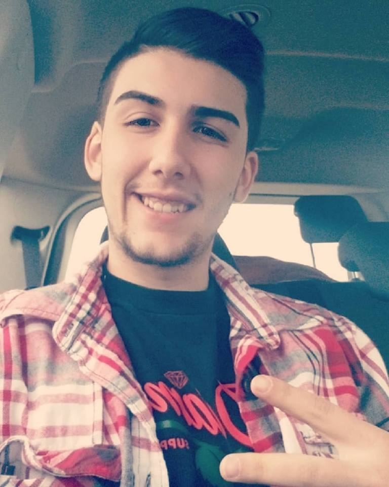

About Me
I'm 21 years old and live in Lorain, Ohio. Some of my favorite hobbies are fishing, video games, and basketball. I attended "Marion L Steele High School" for my first 2 years of highschool. For my last 2 years I attended the "Lorain County Joint Vocational School".
Toward the end of Junior year I joined the union for electrical workers and did that for 4 years. Now I'm currently attending Case Western reserve university for a coding bootcamp.
Email: zrh231@gmail.com
Github profile
https://github.com/zrh231Linkedin
https://www.linkedin.com/in/zach-heimann-7694a2172/